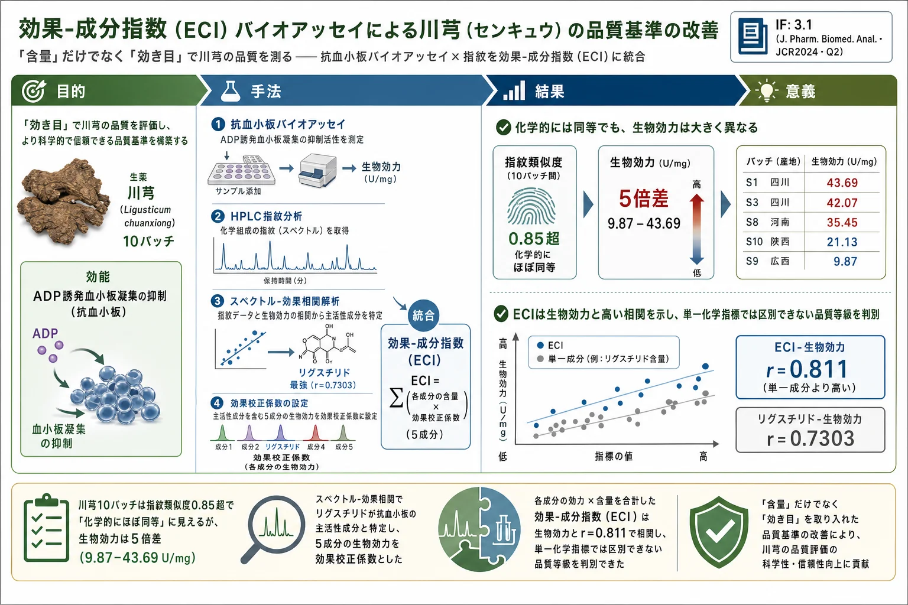
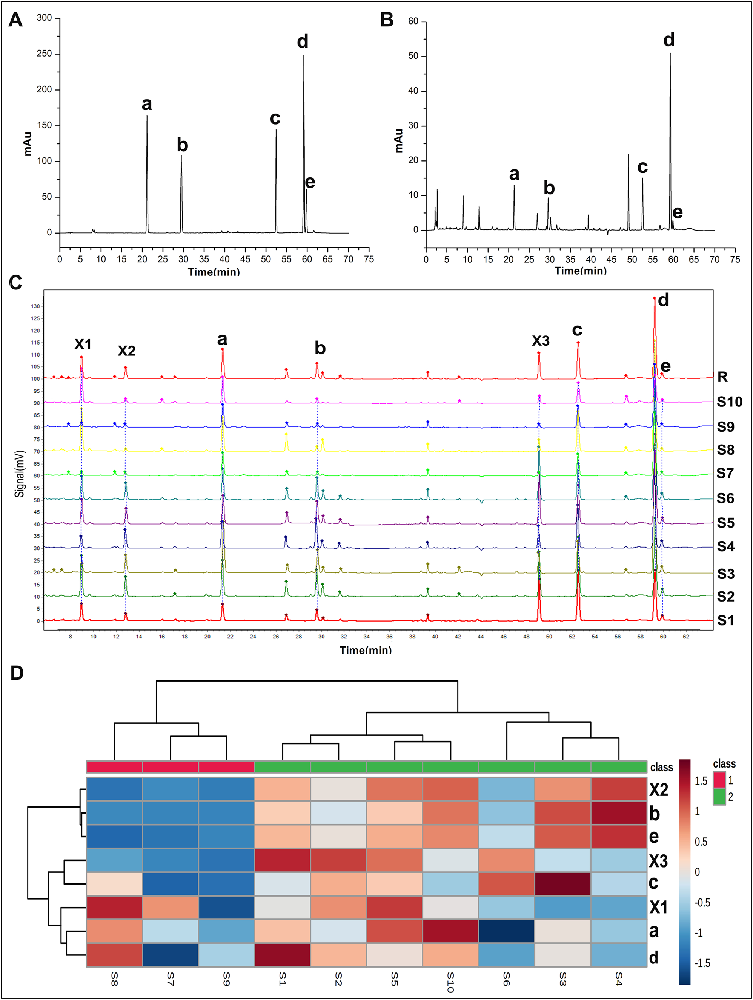
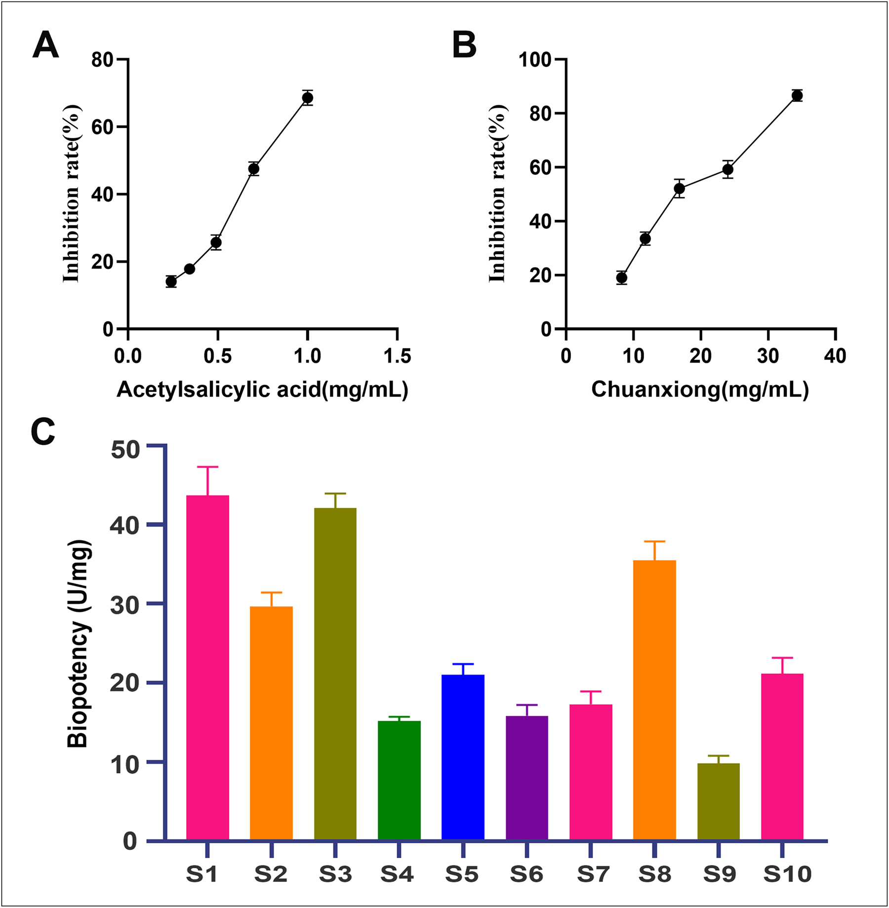
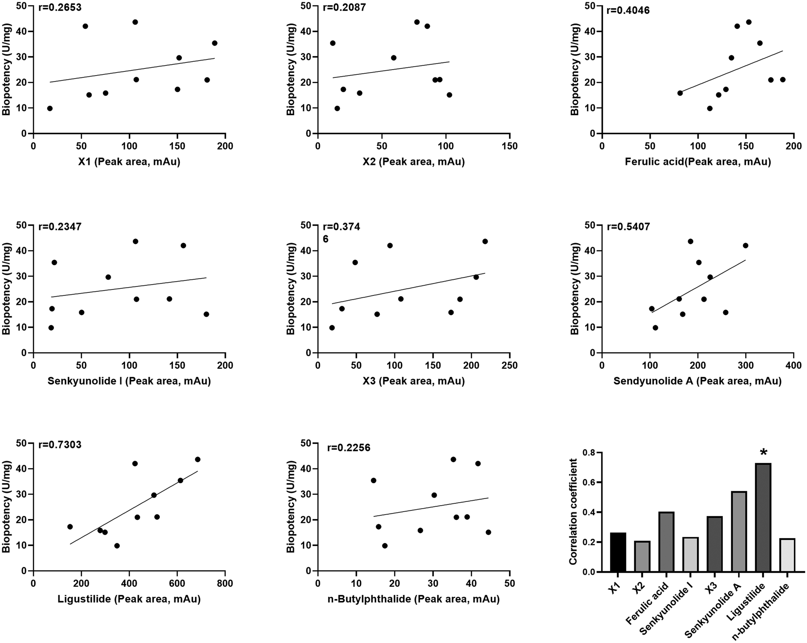
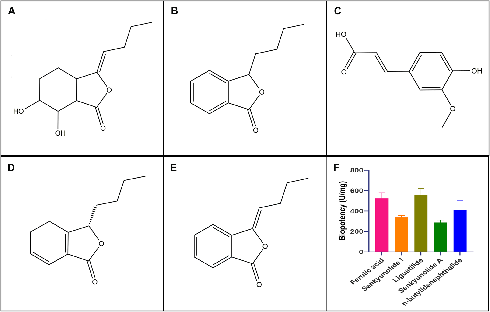
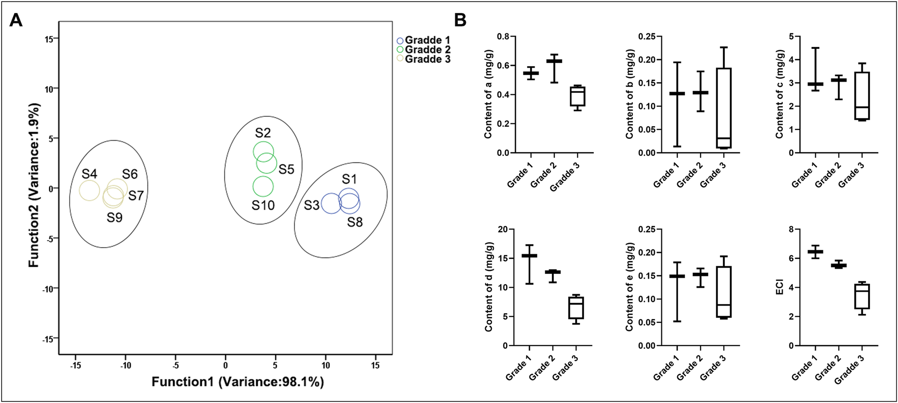
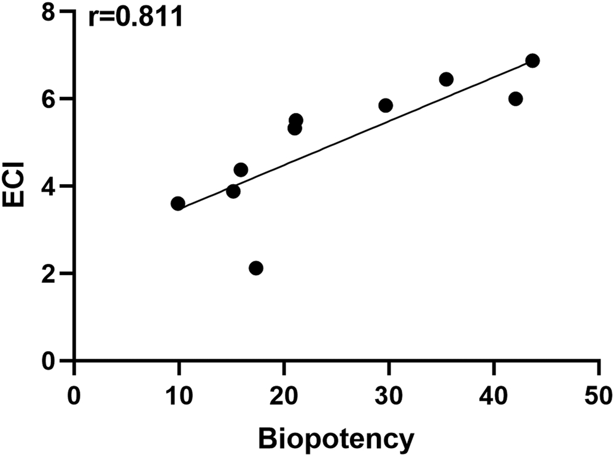

効果-成分指数（ECI）バイオアッセイによる川芎（センキュウ）の品質基準の改善

<!-- Li et al., J. Pharm. Biomed. Anal. 233 (2023) 115455 の全訳密度日本語版。 生薬の効能連動型品質管理（バイオアッセイ＋ECI）の実験論文。practitioner レベル。 表1-4（ピーク面積・生物効力・含量・ECI）を保持。図（Fig.1-6）は原文参照。 -->
書誌情報
- 標題（原題）: Improving Chuanxiong Rhizoma quality standards using an effect-constituent index based bioassay
- 著者: Chunyu Li（責任著者）, Yanlu Liu（共同筆頭）, Bo Cao, Mengmeng Lin, Shiyuan Wang, Bin Dong, Mingyu Zhang, Guohui Li（責任著者）
- 所属: 中国医学科学院・北京協和医学院 国家癌症中心/癌症医院／中国人民解放軍総医院 中医科
- 掲載誌・巻号・DOI: Journal of Pharmaceutical and Biomedical Analysis, 233 (2023) 115455. DOI: 10.1016/j.jpba.2023.115455
- インパクトファクター: 3.1（J. Pharm. Biomed. Anal., JCR 2024 / Clarivate。Q2）
- 受理経過: 2023年3月13日受領／5月4日改訂／5月12日受理／5月13日オンライン公開。© 2023 Elsevier B.V.
- 資金: 北京希望馬拉松専項基金（LC2020A28）
補足: 川芎（せんきゅう、Chuanxiong Rhizoma、学名 Ligusticum chuanxiong、セリ科）は「活血（血行促進）」の代表的生薬で、日本の漢方でも駆瘀血・鎮痛に広く使われる（当帰芍薬散・川芎茶調散など）。本論文の核心は、生薬の品質を「フェルラ酸が何%あるか（化学指標）」だけでなく「実際に血小板凝集をどれだけ抑えるか（生物効力）」で測り、両者を融合した効果-成分指数（ECI, Effect-Constituent Index） を作った点。「成分量は同じでも効き目が違う」という生薬品質の本質的問題への解答で、本文にツムラ（Tsumura And Co.）からのダウンロード記録がある。
要旨（Abstract）
川芎（Chuanxiong Rhizoma）は血行促進に使われる伝統中医薬（TCM）である。バイオアッセイに基づく効果-成分指数（ECI）を用いて川芎の品質基準を改善することを目指した。異なる産地の川芎10試料の化学成分をHPLC分析で決定。次に各試料の抗血小板凝集効果を調べる直接バイオアッセイ法を構築。抗血小板凝集を促進する活性成分をスクリーニングするため、生物効力とHPLCデータで同定された化合物との間でPearson相関解析を実施。生物効力と活性成分の統合に基づく多指標総合評価法を用いて血小板凝集抑制のECIを開発。生物効力ベースの川芎品質評価結果の精度をさらに評価するため、ECIを化学指標法と比較した。
8つの共通化学指紋ピークが試料間で顕著な含量変動を示した。生物学的評価では、10試料すべてが血小板凝集を抑制できたが、生物効力は有意に異なった。スペクトル-効果関係を用い、リグスチリドが抗血小板凝集に責任を持つ有意な活性成分と決定。相関解析で、ECIが川芎抽出物の血小板凝集抑制効果と相関することを見出した。加えて、ECIは川芎品質の良い指標であることが証明されたが、化学指標は生物効力ベースの品質等級を区別・予測できなかった。本研究は、ECIが試料品質をTCMの臨床効果に結びついた化学マーカーと関連づける有用なツールであることを示す。ECIは活血系の他のTCMの品質管理改善のパラダイムも提供する。
キーワード: 川芎、効果-成分指数、バイオアッセイ、品質管理法、抗血小板凝集
1. 序論（Introduction）
脳卒中・心筋梗塞などの虚血性イベントを含む心血管疾患は、世界の死亡・罹病の主因である[1]。急性心血管イベントは主に血栓症で起き、血小板の活性化・凝集が血栓症の病理過程で重要な役割を果たす。アセチルサリチル酸（アスピリン）やクロピドグレルによる抗血小板療法が二次予防の主要手段だが、出血リスクの副作用が避けられない[2]。この課題が、副作用を避けるためTCMから血栓症治療の天然化合物を同定する努力を動機づけた。TCMは心血管疾患予防に広く使われ、多標的の利点を持つ[3]。
川芎は『神農本草経』に「血瘀証」に関連する各種疼痛疾患の治療で初めて記載された。Ligusticum chuanxiong Hort.（セリ科）の乾燥根に由来し中国薬典に収載[4]。良好な血行促進が見出され、狭心症・脳卒中などの心血管障害の治療薬として主に処方される[5]。さらに川芎は血小板抑制効果を持つと報告されている[6,7]。したがって、その品質評価・真贋鑑別・効能保証の問題が広く注目を集めている。
現在、クロマト指紋がTCM評価の主要な品質管理法である。フェルラ酸が中国薬典で川芎生薬・川芎系製品の主要品質管理マーカーとして使われている[21]。しかしフェルラ酸は当帰・酸棗仁・玉ねぎ・リンゴ種子・トウモロコシなど薬用・非薬用の両植物に広く存在する[8–11]。生薬は通常、生物活性成分に富むため、フェルラ酸だけでは明確に同定できない。さらにTCMの同一性を判定し治療効果の一貫性を確保する品質管理法には技術的課題がある。したがって臨床効能の観点で川芎品質を評価するのは困難で、生薬品質をよりよく管理するには高感度で簡便な生物学的方法が必要である。
効果-成分指数（ECI）は効能連動型のTCM品質管理法である[12]。ECIは、TCM全体の効能を反映するため、相対的生物活性係数を用いて効果ベースで校正した活性成分含量の合計と定義される。ECIは化学分析の精度という技術的利点と、効能・安全性に関連する生物効力評価を統合し、化学成分検出を通じて臨床効能連動型のTCM品質を判定できる[13]。ECIはこれまで黄連[12]・丹参[13]・附子[14]・大黄[15]・青黛[16]・黄耆[17]などの生薬品質評価に適用されてきた。
本研究では、10バッチの川芎の化学指紋をHPLCで決定。様々な産地の川芎試料の抗血小板凝集活性の差を比較する in vitro 直接バイオアッセイ法を構築。このバイオアッセイと化学指紋を統合し、相関解析とスペクトル-効果関係の特性化で川芎の抗血小板凝集品質マーカーに関する未解決問題に取り組んだ。さらに検証実験で川芎抗血小板凝集品質マーカーの精度を評価。最後にECIを確立して異なる産地の試料の川芎品質を評価した。
2. 材料と方法（Materials and methods）
2.1 動物・試薬・薬物
雄SDラット（250±10 g）を使用（12h明暗、25±2℃、湿度50-60%、自由摂食）。実験は中国医学科学院癌症医院の科学調査委員会承認のNIHガイドラインに従う。ADP（Helena Laboratories）、アセチルサリチル酸標準品（中国食品薬品検定研究院）、フェルラ酸・センキュノリドI・n-ブチリデンフタリド・センキュノリドA・リグスチリド標準品（成都克洛玛生物）。10試料を広西・陝西・雲南・河南・四川から収集、Guo-hui Li教授が鑑定。
2.2 川芎HPLC分析
Agilent 1200（DAD）。Zorbax Eclipse Plus C18（3.5 µm, 100×2.1 mm, 30℃）、検出300 nm。移動相A（アセトニトリル）・B（0.1%ギ酸水）、勾配: 0–15分 10–16%A；15–32分 16–27%A；32–35分 27–37%A；35–60分 37–58%A；60–70分 58–10%A。注入量5 μL、流速1.0 mL/min。標準溶液は70%エタノールに溶解。試料は乾燥川芎粉末を10倍量70%エタノール水で室温1時間超音波抽出、3000 rpmで10分遠心、上清を真空乾燥。HCA（MetaboAnalyst 3.0）でヒートマップ解析。
2.3 川芎の生物効力測定
2.3.1 溶液調製: アセチルサリチル酸10 mgを0.5%DMSO含有生理食塩水に溶解し1 mg/mLストック。川芎粉末を同様に100 mg/mLに。隣接2濃度比1:0.7で4作業濃度に希釈。
2.3.2 血小板調製: 雄SDラットをペントバルビタール麻酔、腹大動脈から3.8%クエン酸ナトリウム採血。800 rpmで15分遠心し上清を多血小板血漿（PRP）、3000 rpm再遠心で乏血小板血漿（PPP）。血小板を2×10⁸/mLでPPPに再懸濁。
2.3.3 血小板凝集抑制アッセイ: 濁度法でAggRAM血小板凝集分析器（Helena）測定。PPPで光透過を較正（ゼロ調整）。175 μL PRP＋50 μL試験溶液を37℃で3分撹拌インキュベート。生食を正常対照、アセチルサリチル酸を標準対照。25 μL ADP（2.5 mg/mL）を作動薬に凝集誘導。5分内の光透過変化を記録。ベースラインに対する最大光透過%を凝集率とし、抑制率I%（式1）:
$$I\% = \frac{X - Y}{X} \times 100\%$$
（X: 溶媒処理PRPの最大凝集率、Y: 試料処理PRPの最大凝集率）採血後2時間内に測定、3反復。
2.3.4 生物効力アッセイ: 中国薬典（2020）の定性反応平行法でバイオアッセイ統計解析。原則: ①各標準・試料の希釈系列は4濃度以上、②試料の最大濃度効果が標準に近い、③隣接高低用量群の比(r)が等しく通常1:0.5〜1:0.8、④標準対照のアセチルサリチル酸の生物効力を1000 U/mgと定義。薬典バイオアッセイ統計ソフト（BS2000版）で測定。
2.4 ECIの確立
2.4.1 参照生物効力アッセイ: 5参照（フェルラ酸・センキュノリドI・n-ブチリデンフタリド・センキュノリドA・リグスチリド）のI%と生物効力を上記法で測定。
2.4.2 ECI計算（式2）:
$$\mathrm{ECI} = \sum_{i=1}^{n} (F_i \times C_i)$$
（Fi: 各成分の生物効力、Ci: 各成分の測定含量、n: 活性成分数、Fi×Ci: 各成分の相対生物効力寄与）
2.4.3 相関解析: 生物効力と共通ピークのPearson相関係数(r)。TCM色譜指紋類似度評価システム（2012A版）、SPSS 15.0。
3. 結果（Results）
3.1 川芎HPLC分析
10バッチをHPLC分析。混合参照と川芎試料のピークは明瞭・良分離（Fig.1A,B）。参照と比較し試料S1で5ピーク（a,b,c,d,e）をフェルラ酸・センキュノリドI・センキュノリドA・リグスチリド・n-ブチリデンフタリドと同定。10バッチの指紋類似度は0.864〜0.992。5–65分に8共通ピークを観測、未同定3ピーク（X1–X3）。リグスチリドが指紋で最大ピーク。異なる産地の8共通ピークの変動係数（RSD%）は22.69〜68.09（Table 1）で、センキュノリドI(b)のピーク面積差が最大。
HCA（Fig.1D）で2主要クラスターに分割: クラスター1（S7-9、低ピーク強度＝コールドスポット）、クラスター2（S1-S6, S10、高ピーク強度＝ホットスポット）。クラスター2の化学成分含量がクラスター1より高い。

Table 1. 川芎試料の8共通ピークのピーク面積（抜粋）
| No. | 産地 | a(フェルラ酸) | b(センキュノリドI) | c(センキュノリドA) | d(リグスチリド) | e(n-ブチリデンフタリド) |
|---|---|---|---|---|---|---|
| S1 | 四川 | 152.91 | 106.42 | 184.52 | 685.61 | 35.3 |
| S3 | 四川 | 140.83 | 156.3 | 299.43 | 423.72 | 41.71 |
| S8 | 河南 | 164.53 | 21.67 | 201.79 | 613.36 | 14.49 |
| S9 | 広西 | 112.3 | 18.38 | 111.2 | 348.71 | 17.44 |
| RSD(%) | 22.69 | 68.09 | 31.67 | 37.40 | 36.74 |
3.2 川芎の生物効力測定
構築した血小板凝集アッセイで川芎生物効力を測定できるか調べるため、アセチルサリチル酸と川芎のADP誘発血小板凝集への抑制効果を測定。異なる濃度のアセチルサリチル酸で凝集反応が比例的に減少（Fig.2A）。川芎5用量（34.30/24.01/16.81/11.76/8.24 mg/mL）も用量依存的に有意に凝集抑制（Fig.2B）。川芎群の平均最大血小板凝集はアセチルサリチル酸群に対応。
10バッチの生物効力を測定（Fig.2C）。異なる産地の試料間で生物活性に大きな差、最大値が最小値の約5倍。最高生物効力は四川（S1、43.69 U/mg）、最低は広西（S9、9.87 U/mg）（Table 2）。興味深いことにS1-S5は全て四川産だが生物活性が大きく変動（43.69, 29.68, 42.07, 15.15, 20.00 U/mg）。信頼性試験でFL%<10%、平行線・直線からの偏差に有意差なし（p>0.05）。
抗血小板凝集の背後にある活性成分を調べるため、生物効力と8共通成分の面積値のPearson相関解析。8成分（X1, X2, フェルラ酸, センキュノリドI, X3, センキュノリドA, リグスチリド, n-ブチリデンフタリド）の相関係数はすべて有意に正相関（Fig.3）。リグスチリドが抗血小板凝集効果に最強の相関（r=0.7303, p<0.05）。


Table 2. 川芎試料の生物効力測定結果（抜粋）
| 試料 | 産地 | 測定生物効力PT(U/mg) | FL(%) |
|---|---|---|---|
| S1 | 四川1 | 43.69 | 1.57 |
| S3 | 四川3 | 42.07 | 1.41 |
| S8 | 河南 | 35.45 | 2.36 |
| S2 | 四川2 | 29.68 | 2.39 |
| S10 | 陝西 | 21.13 | 2.33 |
| S9 | 広西 | 9.87 | 5.46 |
3.3 効果-成分指数（ECI）の確立
5既知化合物の抗血小板活性を検証（Fig.4）。5成分すべてが凝集抑制でき、生物効力はリグスチリド＞フェルラ酸＞n-ブチリデンフタリド＞センキュノリドI＞センキュノリドA。各化合物の生物効力を効果校正係数とし、a,b,c,d,eの測定含量に掛けた（Table 3）。式2で10バッチのECIを算出（Table 4）。最大ECIは6.8782（S1）、最小は2.1264（S7）。S1-S10のFi×Ci値のうち、リグスチリド(d)が相対生物効力に最も寄与（スペクトル-効果関係と一致）。ECIと生物効力の相関 r=0.811（Fig.5）で、リグスチリド単独と生物効力の相関（0.7303）より高い。


Table 4. 川芎の効果-成分指数（Fi×Ci と ECI、抜粋）
| 試料 | a | b | c | d(リグスチリド) | e | ECI |
|---|---|---|---|---|---|---|
| S1 | 0.2874 | 0.0429 | 1.5000 | 4.9872 | 0.0608 | 6.8782 |
| S8 | 0.3092 | 0.0045 | 1.6548 | 4.4575 | 0.0212 | 6.4472 |
| S3 | 0.2647 | 0.0656 | 2.5302 | 3.0671 | 0.0729 | 6.0004 |
| S2 | 0.2534 | 0.0301 | 1.8661 | 3.6481 | 0.0512 | 5.8489 |
| S7 | 0.2426 | 0.0035 | 0.7754 | 1.0813 | 0.0237 | 2.1264 |
3.4 ECIと化学指標の比較
生物効力と化学成分含量に基づくFisher線形判別分析（LDA）で試料を分類。10バッチを3等級に分けた（Fig.6A）: 等級1（S1, S3, S8）、等級2（S2, S5, S10）、等級3（S4, S6, S7, S9）。3等級は互いに分離。5成分（a,b,c,d,e）は生物効力ベースの品質水準を有意に区別できなかったが、ECIは3等級すべてを分類できた（Fig.6B）。

4. 考察（Discussion）
TCMの多様性と活性成分定義の不確実性のため、生薬品質管理は臨床応用に非常に重要。本研究では、10産地の川芎の化学指紋はかなり異なったが、指紋類似度は限界値0.85超で、10試料が品質的にほぼ同等に見えた。しかし共通ピーク面積RSD%は22.69〜68.09で、異なる産地の試料に化学組成の差があった。化学分析でTCM組成の多様性を検出できるが、品質・治療の一貫性保証には十分厳密でないかもしれない。
2015年、米国FDAは『植物薬開発ガイダンス』草案で、TCM・植物薬品質評価に生物学的アッセイの構築が必要と示唆した。川芎は抗血小板凝集効果で知られるが、この効果に関連する品質推定バイオアッセイは未確立だった。バイオアッセイでは標準の選択が重要（最大効果が試料に近い・用量関係が有意・隣接濃度比0.5〜0.8）。予備実験後、アセチルサリチル酸を標準に選んだ（比0.7）。生物効力は10バッチで9.87〜43.69 U/mgと大きく変動。FL%<10%で平行線・直線からの偏差・精度・信頼性を満たした。したがって in vitro 抗血小板凝集バイオアッセイで川芎の活性評価と産地判別ができる。
フェルラ酸が中国薬典2020で唯一の川芎品質管理マーカーとして使われるが[21]、川芎は多成分を含むため品質・生物活性の一貫性保証に不十分。例えばS05（四川）は最低ピーク面積（81.3）、S08は最高（195.4）だが、S05の生物効力（20.18）は6位、S08（35.45）は3位——含量順位と効力順位が一致しない。したがって構築したバイオアッセイ法は現行の川芎品質管理法を改善できる。
ただしバイオアッセイは高コスト・操作性の制限・動物倫理・低精度の限界がある。化学分析はこれを補える（高精度・良操作性・低コスト）。したがってECIは両者の利点を統合し、川芎品質評価の有望戦略と証明された。ECIは生物効力ベースの品質等級を区別できたが、フェルラ酸・センキュノリドI・n-ブチリデンフタリド・センキュノリドA・リグスチリドといった単一成分は（すべて強い抗血小板活性を持つにもかかわらず）できなかった。スペクトル-効果関係でリグスチリドが川芎の抗血小板凝集に最も寄与する化合物と示され、検証実験でも同結果。しかし相関解析でリグスチリド単独よりECIの方が生物効力とよく相関——ECIは単一活性成分の限界を回避する。
主に共通ピークに焦点を当てた（UV信号が強くPDA検出器の制限のため）。LC/MSでX1-X3をクロロゲン酸・カフェ酸・コニフェリルフェルラートと同定。他9化合物（リグストラジン・フェルラ酸・センキュノリドI・3-ブチリデンフタリド・Z-4,5-ジヒドロキシ-3-ブチリデンフタリド・センキュノリドE・センキュノリドA・リグスチリド・川リグスピロリド）も同定。クロロゲン酸・リグストラジン・カフェ酸・コニフェリルフェルラートも抗血小板効果を持つ。将来これらの生物効力・含量を測定し新ECIを開発すべき。
多成分の複雑系であるTCMの品質管理は、効能・生物効果の一貫性維持と安全性・有効性確保に特に重要。単一成分・単一効能の測定は現代TCM要件を満たせない。本研究は川芎品質基準改善の基盤を築くが、臨床効能に対応する明確な効果・活性成分の解明にはさらなる科学研究が必要。
参考文献
- Ferdinandy, P.; Andreadou, I.; Baxter, G.F.; Bøtker, H.E.; Davidson, S.M.; Dobrev, D.; Gersh, B.J.; Heusch, G.; Lecour, S.; Ruiz-Meana, M.; Zuurbier, C.J.; Hausenloy, D.J.; Schulz, R. Interaction of cardiovascular nonmodifiable risk factors, comorbidities and comedications with ischemia/reperfusion injury and cardioprotection by pharmacological treatments and ischemic conditioning. Pharmacol. Rev. 75 (2023) 159–216.
- Millesimo, M.; Elia, E.; Marengo, G.; De Filippo, O.; Raposeiras-Roubin, S.; Wanha, W.; et al. Antithrombotic strategy in secondary prevention for high-risk patients with previous acute coronary syndrome: overlap between the PEGASUS eligibility and the COMPASS eligibility in a large multicenter registry. Am. J. Cardiovasc. Drugs 23 (2023) 77–87.
- Zeng, X.; Zheng, Y.; Liu, Y.; Su, W. Chemical composition, quality control, pharmacokinetics, pharmacological properties and clinical applications of Fufang Danshen tablet: a systematic review. J. Ethnopharmacol. 278 (2021) 114310.
- Chen, Z.; Zhang, C.; Gao, F.; Fu, Q.; Fu, C.; He, Y.; Zhang, J. A systematic review on the rhizome of Ligusticum chuanxiong Hort. (Chuanxiong). Food Chem. Toxicol. 119 (2018) 309–325.
- Huajuan, J.; Xulong, H.; Bin, X.; Yue, W.; Yongfeng, Z.; Chaoxiang, R.; Jin, P. Chinese herbal injection for cardio-cerebrovascular disease: overview and challenges. Front. Pharmacol. 14 (2023) 1038906.
- Chen, C.; Wang, F.; Xiao, W.; Xia, Z.; Hu, G.; Wan, J.; Yang, F. Effect on platelet aggregation activity: extracts from 31 traditional Chinese medicines with the property of activating blood and resolving stasis. J. Tradit. Chin. Med. 37 (2017) 64–75.
- Xiao, S.L.; Ding, S.L.; Sun, Z.X.; Liao, F.L.; You, Y. Platelet function tests and Chinese medicines with antiplatelet function: a review. Zhongguo Zhong Yao Za Zhi 46 (2021) 4907–4921.
- Long, Y.; Li, D.; Yu, S.; Shi, A.; Deng, J.; Wen, J.; Li, X.Q.; Ma, Y.; Zhang, Y.L.; Liu, S.Y.; Wan, J.Y.; Li, N.; Yang, M.; Han, L. Medicine-food herb: angelica sinensis, a potential therapeutic hope for Alzheimer's disease and related complications. Food Funct. 13 (2022) 8783–8803.
- Kaur, R.; Sood, A.; Lang, D.K.; Arora, R.; Kumar, N.; Diwan, V.; Saini, B. Natural products as sources of multitarget compounds: advances in the development of ferulic acid as multitarget therapeutic. Curr. Top. Med. Chem. 22 (2022) 347–365.
- Guo, X.; Li, H.; Feng, H.; Qi, H.; Zhang, L.; Xu, W.; Wu, Y.; Wang, C.; Liang, X. Quality analysis of Ziziphi Spinosae Semen extracts based on high performance liquid chromatography quantitative fingerprint and ultra-high performance liquid chromatography-tandem mass spectrometry quantification. Se Pu 39 (2021) 989–997.
- Yuan, X.; Han, B.; Feng, Z.M.; Jiang, J.S.; Yang, Y.N.; Zhang, P.C. Chemical constituents of Ligusticum chuanxiong and their anti-inflammation and hepatoprotective activities. Bioorg. Chem. 101 (2020) 104016.
- Xiong, Y.; Hu, Y.; Li, F.; Chen, L.; Dong, Q.; Wang, J.; Gullen, E.A.; Cheng, Y.C.; Xiao, X. Promotion of quality standard of Chinese herbal medicine by the integrated and efficacy-oriented quality marker of effect-constituent Index. Phytomedicine 45 (2018) 26–35.
- Liu, Z.J.; Shi, Z.L.; Tu, C.; Zhang, H.Z.; Gao, D.; Li, C.Y.; He, Q.; Li, R.S.; Guo, Y.M.; Niu, M. An activity-calibrated chemical standardization approach for quality evaluation of Salvia miltiorrhiza Bge. RSC Adv. 7 (2017) 5331–5339.
- Zhang, D.K.; Li, R.S.; Han, X.; Li, C.Y.; Zhao, Z.H.; Zhang, H.Z.; Yang, M.; Wang, J.B.; Xiao, X.H. Toxic constituents index: a toxicity-calibrated quantitative evaluation approach for the precise toxicity prediction of the hypertoxic phytomedicine-aconite. Front. Pharmacol. 7 (2016) 164.
- Tan, P.; Wang, J.B.; Zhang, D.K.; Zhou, Y.F.; Wang, M.; Niu, M.; Zhao, J.N.; Xiao, X.H. Application of an effect-constituents index for the quality evaluation of the traditional Chinese medicine rhubarb. Acta Pharm. Sin. B 54 (2019) 2141–2148.
- Zhang, T.; Huang, H.-z.; Xu, R.-c.; Wang, J.-b.; Yang, M.; Cao, J.-h.; Zhang, Y.; Zhang, D.-k.; Han, L. An anti-influenza virus activity-calibrated chemical standardization approach for quality evaluation of indigo naturalis. Anal. Methods 11 (2019) 4719–4726.
- Ren, Y.; Gao, F.; Li, B.; Yuan, A.; Zheng, L.; Zhang, Y. A precise efficacy determination strategy of traditional Chinese herbs based on Q-markers: anticancer efficacy of Astragali radix as a case. Phytomedicine 102 (2022) 154155.
- Li, C.; Tu, C.; Che, Y.; Zhang, M.; Dong, B.; Zhou, X.; Shi, Y.; Li, G.; Wang, J. Bioassay based screening for the antiplatelet aggregation quality markers of Polygonum multiflorum with UPLC and chemometrics. J. Pharm. Biomed. Anal. 166 (2019) 264–272.
- Qu, J.; Zhang, T.; Liu, J.; Su, Y.; Wang, H. Considerations for the quality control of newly registered traditional Chinese medicine in China: a review. J. AOAC Int. 102 (2019) 689–694.
- Liang, Y.Z.; Xie, P.S.; Chan, K. Chromatographic fingerprinting and metabolomics for quality control of TCM. Comb. Chem. High. Throughput Screen 13 (2010) 943–953.
- Chinese Pharmacopoeia Commission, Pharmacopoeia of the People's Republic of China. Beijing: China Medical Science Press 1 (2022) 42.
- Yang, Y.Y.; Wu, Z.Y.; Xia, F.B.; Zhang, H.; Wang, X.; Gao, J.L.; Yang, F.Q.; Wan, J.B. Characterization of thrombin/factor Xa inhibitors in Rhizoma Chuanxiong through UPLC-MS-based multivariate statistical analysis. Chin. Med. 15 (2020) 93.
- Zhang, D.Y.; Peng, R.Q.; Wang, X.; Zuo, H.L.; Lyu, L.Y.; Yang, F.Q.; Hu, Y.J. A network pharmacology-based study on the quality control markers of antithrombotic herbs: using Salvia miltiorrhiza - Ligusticum chuanxiong as an example. J. Ethnopharmacol. 292 (2022) 115197.
- Ke, Y.; Ma, Z.; Ye, H.; Guan, X.; Xiang, Z.; Xia, Y.; Shi, Q. Chlorogenic acid-conjugated nanoparticles suppression of platelet activation and disruption to tumor vascular barriers for enhancing drug penetration in tumor. Adv. Healthc. Mater. 12 (2023) e2202205.
- Yang, Q.Q.; Fang, M.S.; Tu, J.; Ma, Q.X.; Shen, L.Y.; Xu, Y.Y.; Chen, J.; Chen, M.L. Guanxinning tablet inhibits the interaction between leukocyte integrin Mac-1 and platelet GPIbα for antithrombosis without increased bleeding risk. Chin. J. Nat. Med. 20 (2022) 589–600.
- Gao, J.; Ren, J.; Ma, X.; Zhang, Y.; Song, L.; Liu, J.; Shi, D.; Ma, X. Ligustrazine prevents coronary microcirculation dysfunction in rats via suppression of miR-34a-5p and promotion of Sirt1. Eur. J. Pharmacol. 929 (2022) 175150.
訳者補足
- ECI（効果-成分指数）の考え方: 従来の生薬品質管理は「マーカー成分（川芎ならフェルラ酸）が何%あるか」で判断する。しかし本論文は「含量が同じでも効き目が違う」問題を突く（実際、含量最低のS05が効力6位、含量最高のS08が効力3位と逆転）。ECIは「各活性成分の含量」×「その成分の生物効力（効果校正係数）」を全成分について合計する。つまり"量"に"効き目の重み"を掛けて足すことで、化学測定だけで「臨床効果に連動した品質」を数値化できる。ECIが生物効力とr=0.811で相関し、単一成分（リグスチリド r=0.73）より良かったのが成果。
- なぜフェルラ酸では不十分か: フェルラ酸は薬典の川芎マーカーだが、当帰・玉ねぎ・リンゴ種子など様々な植物にありふれた成分で、川芎の真贋・効能を特定できない。本研究はリグスチリド（川芎の抗血小板の主活性成分）を軸に据え、5成分をECIに統合することでこの弱点を補った。
- バイオアッセイ×化学分析の相補性: バイオアッセイ（実際に血小板凝集を測る）は「効き目」を直接見られるが、高コスト・動物倫理・低精度が難点。化学分析（HPLC）は高精度・低コストだが「効き目」は測れない。ECIは両者を橋渡しし、「一度バイオアッセイで効果校正係数を決めれば、あとは化学分析（含量測定）だけで効能連動の品質を推定できる」という実用的な設計。日本の漢方品質管理（当帰芍薬散など川芎を含む方剤）にも応用しうる考え方。
- 川芎（センキュウ）とは: セリ科 Ligusticum chuanxiong の根茎で、活血・行気・止痛の代表生薬。日本の漢方でも当帰芍薬散・川芎茶調散・七物降下湯などに配合される。産地（四川が道地産地）やバッチで品質が大きくばらつくことが本研究で定量的に示された（生物効力5倍差）。
- 図（Fig.1〜6：クロマトグラム、用量反応曲線、相関解析、構造式、LDA判別）と補足資料は原文参照。